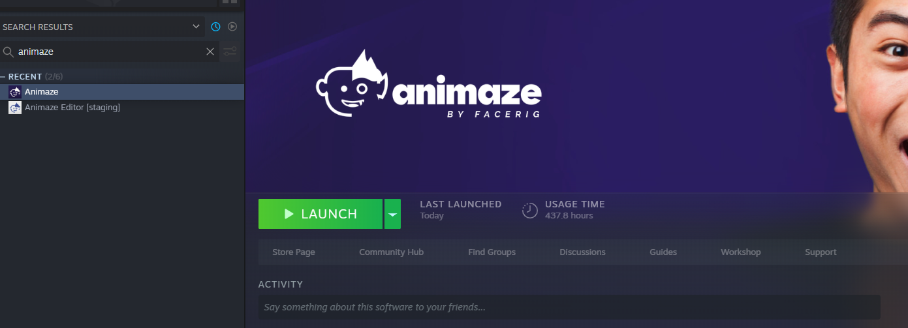
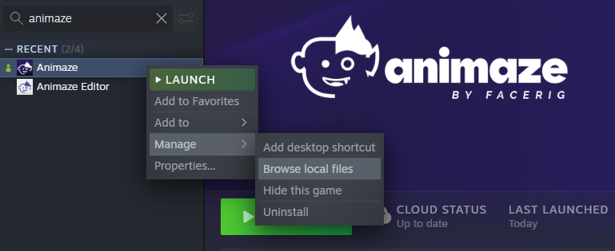
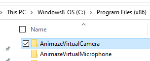
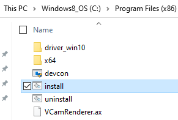

AnimazeVirtualCameraドライバーをインストールするには、どうすれば良いですか？
Animazeアプリがお使いのコンピュータにインストールされている必要があります

SteamアプリでAnimazeアプリを右クリックし、「設定」 -> 「ローカルファイル」 -> 「ローカルファイルの参照」の順にクリックします

Binフォルダーを開きます

Binフォルダー内のprerequisitesフォルダーを開き、AnimazeVirtualCameraフォルダーを開きます

Windowsバッチファイル「install」をダブルクリックしてAnimazeバーチャルカメラドライバーをインストールします

Animazeバーチャルカメラで問題が発生する場合、またはFaceRig Virtual Cameraが表示されている場合、以下の手順を試してください：
OSが最新バージョンにアップデートされていることを確認します。新しいAnimazeバーチャルカメラを使用するには、Windows 10が必要で、バージョンが1903以上である必要があります。
お使いのウェブカメラの最新のドライバーがインストールされていることを確認します。更新後にシステムを再起動する必要があります。
外付けのウェブカメラをお使いの場合、別のUSBポートにつなぎ替えることも可能です。
Animazeバーチャルカメラのアップデートを開発中です。配信を維持するため、FaceRig Virtual Cameraがバックアップとして使用できるようになっています。